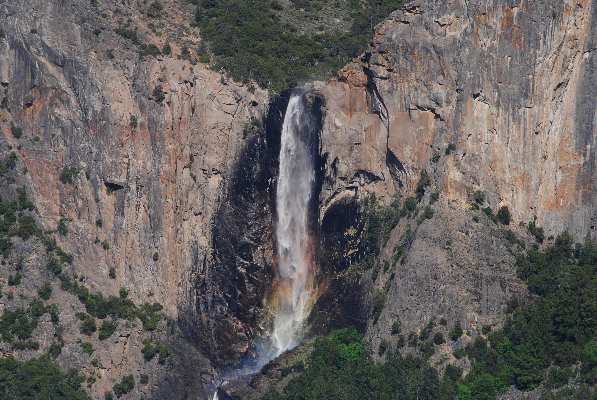

Bridalveil Fall

Plunging 620 feet (189 meters), Bridalveil Fall is often the first waterfall you'll see when entering Yosemite Valley. In spring, it thunders; during the rest of the year, look for its characteristic light, swaying flow. A paved trail leads from the parking area to the base of this waterfall, which flows year-round. Although paved, this is trail is not wheelchair accessible due to its grade.